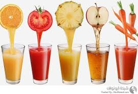

| لاشك أن الصحة الجيدة تبدأ من الغذاء الجيد، فعلى مدار عشرات السنين، قام الباحثون في أمريكا وأوروبا بدراسات عدة على الغذاء وأفضل الأغذية تأثيراً على الصحة. ويأتي الغذاء الجيد من احتوائه على العديد من العناصر الغذائية التي لها أثر على الصحة. والعرب قالوا قديماً أن المعدة بيت الداء وهذا ما أكده العلم الحديث حيث أن ثمة أغذية تفيد الصحة وأخرى تضر الصحة إذا تم تناولها بكثرة. والآن وبعد كل هذه الأبحاث التي أجريت على مدار عقود ماضية، فإن العلم قد حدد أكثر الأغذية و اللاكلات الصحية للإنسان وسنوردها في هذا التقرير |
التفاح
يعد التفاح مصدراً ممتازاً لمضادات الأكسدة والتي تعمل على مقاومة الشقوق الحرة التي تعمل على تدمير خلايا الجسم السليمة من خلال انتشارها بالجسم وتشارك في إحداث تغيرات غير مرغوبة به وتتسبب في بعض الأمراض.
ووجدت بعض الدراسات التي أجريت على الحيوانات أن التفاح يحتوي على مضادات الأكسدة التي تعرف بالفينولات العديدة تعمل على إطالة عمر الحيوانات. كما وجدت زيادة قدرتها على المشي والتسلق والحركة.
بينما وجدت دراسة أخرى أن السيدات البالغات اللاتي يتناولن التفاح بانتظام قد انخفضت لديهن مخاطر الإصابة بأمراض الفلب بنسبة تتراوح بين 13-22%. ويؤكد التفاح يوماً بعد يوم صدق المقولة التي تقول بأن تناول التفاح يومياً يجعل الطبيب يتسول خبزه.
المكسرات
حتوي المكسرات سيما اللوز على العديد من المغذيات الصحية مثل الحديد والكالسيوم وفيتامين هـ والريبوفلافين والماغنيسيوم.
وثمة نشرة علمية حديثة نشرت في نشرة التغذية العالم الماضي ذكرت بأن اللوز يحافظ على مستويات الكولسترول في الدم. وقال مؤلفوها أن هذه رسالة يبعث اللوز بها حيث يقول أنه صديق للقلب وأنه يجب أن يتناول بانتظام. وعلاوة على ذلك، فإن وضع اللوز في نظام غذائي صحي ومتوازن يحدث فوائد أكبر من هذا بكثير.
وتحتوي الدهون في اللوز على 91-94% أحماضاً دهنية غير مشبعة ربما تفيد في معرفة السبب في الحفاظ على مستويات الكولسترول في الدم. بجانب أن اللوز يحتوي على ألياف غذائية بنسبة جيدة.
كانت دراسة حديثة قد أشارت إلى أن تناول اللوز والمكسرات يسبب انخفاضاً في الوزن والأمراض.
االبروكلى
يحتوي البروكلي والقنبيط على عناصر غذائية هامة، حيث يحتوي على الفولات والكالسيوم والبوتاسيوم ومركبات الفايتو التي تعمل على خفض مخاطر الإصابة بأمراض القلب والسكري والعديد من أنواع السرطان. بجانب أنه يحتوي أيضاً على البيتا كاروتين ومضادات الأكسدة وفيتامين ج.
ويحتوي البروكلي على إنزيم يسمى بالميروزنيز الذي يعمل على تحويل مجموعة الجلوكوز إلى جلوكوزنات والجزء المتبقى يتحول إلى الأيزوسيانات التي تقوم بدورها بحماية الجسم من الكائنات الحية الدقيقة التي تهاجم الجسم. وحتى إذا تم تدمير هذا الإنزيم، فإن البروكلي والقنبيط يستمران في مقاومة أمراض السرطان. إلا أن كفائتهما تزداد مع وجود هذا الإنزيم، ولذلك ينصح الباحثون في جامعة إلينوي بطهي البروكلي على البخار للحفاظ على هذا الإنزيم.
ثمة عنصر آخر يوجد في البروكلي يقاوم أمراض السرطان فضلاً عن الالتهابات الأخرى وهي المركبات الكبريتية. كانت دراسة حديثة قد أكدت على أن القنبيط يعمل على حماية المرأة من سرطان الثدي
التوت و الفراةله
يحتوي التوت على عناصر غذائية هامة من حيث مضادات الأكسدة والألياف والفيتامينات. ففي دراسة أجريت في كلية الطب بهارفارد، فإن المسنين الذين يتناولون الكثير من التوت والفراولة كانوا أقل عرضة لتدهور الذاكرة من غيرهم.
وفي دراسة أخرى، كان التوت الأزرق مساعداً في الحد من السمنة عند السيدات، حيث أكد علماء جامعة تكساس الذين قاموا بهذه الدراسة أن الفينولات العديدة التي توجد بالتوت تعمل على الحد من تطور الخلايا الدهنية وبالتالي تساعد في منع تكون الشحوم بالجسم.
وثمة علماء بريطانيون من جامعة إيست أنجليا قد أكدوا على أن الاستهلاك المنتظم للتوت يمكن أن يقلل من مخاطر ارتفاع ضغط الدم بنسبة قد تصل إلى 10% بسبب المركبات الحيوية النشطة التي توجد بالتوت.
وفي دراسات أخرى أجريت على الحيوانات، أكد الباحثون على أن استهلاك التوت يرتبط بقوة العظام. كما يعمل أيضاً التوت على تقليل مخاطر الإصابة بتصلب الشرايين والأمراض المعدية.
الاسماك الدهنيه
الأسماك الدهنية مثل السلمون والماكريل والتونة والرنجة والسردين والأنشوجة تحتوي على الزيوت في طيات أنسجتها وحول أمعائها لا سيما أحماض أوميجا-3 الدهنية التي من المعروف عنها أنها تعمل على حماية القلب من الأمراض بجانب دورها الكبير في تقوية الذاكرة، إلى جانب أنها تعمل على وقاية الجسم من الالتهابات.
ووجد علماء من جامعة كاليفورنيا أن تطور سرطان البروستاتا قد انخفض بشكل ملحوظ مع اتباع المرضى نظام غذائي منخفض الدهون يحتوي على مكملات زيت السمك. كانت دراسة أخرى قد أكدت على أن تناول الأسماك الدهنية مرتين أسبوعياً يحمي الإنسان من مخاطر الإصابة بالسكتات الدماغي.

الخضروات الورقيه
أظهرت العديد من الدراسات أن تناول كميات كبيرة من الخضروات الورقية مثل السبانخ أوالكرنب يمكن أن تقلل بشكل كبير من مخاطر الإصابة بالسكري. كما ذكر باحثون من جامعة ليسيستر الإنجليزية أن الإنسان يجب عليه تناول الكثير من الخضروات الورقية لتأثيرها المفيد على صحة الإنسان.
وتحتوي السبانخ على سبيل المثال على مضادات للأكسدة خصوصاً حينما تكون غير مطبوخة، حيث يفضل أن تطبخ على البخار أو تغلى بشكل طفيف. وهي مصدر جيد لفيتامينات (هـ) و (ج) وفيتامين (أ) و (ك) و(ب6) وتحتوي أيضاً على السيلنيوم والنياسين والزنك والفوسفور والنحاس وحمض الفوليك والبوتاسيوم والكالسيوم والمنجنيز والبيتين والحديد.
وتحتوي أيضاً الملوخية على العديد من الفوائد الهامة للجسم حيث أنها غنية بالبروتينات وفيتامين أ ويمكن الإطلاع على تقرير حول فوائد الملوخية
البطاطا الحلوة
البطاطا الحلوة من أكثر الخضروات الغنية بالألياف وتحتوي أيضاً على البيتا كاروتين والكربوهيدرات وفيتامين ج وفيتامين ب6 وكذلك الكاروتين. ويشير المركز العلمي للمصلحة العامة بأمريكا إلى أن البطاطا الحلوة تأتي في المرتبة رقم 1 بين الخضروات جميعها في احتوائها على الفيتامينات (ج) و (أ) والحديد والكالسيوم والبروتين والكربوهيدرات.
وكانت دراسة نمساوية قد أجريت على مرضى السكر قد أكدت على خفض البطاطا لمشاكل الإصابة بمرض السكري.
جنين القمح
يحتوي جنين القمح على نسبة عالية جداً من المواد الغذائية الهامة مثل فيتامين هـ والفولات والثيامين والماغنيسيوم والفوسفور والكحولات الدهنية والأحماض الدهنية الأساسية بجانب احتوائه على الألياف
الافوكادو
كثير من الناس يتجنبون تناول الأفوكادو بسبب محتواه من الدهون حيث يعتقدون أن تجنب الدهون يمكن أن يؤدي إلى السيطرة على وزن الجسم والأمراض، إلا أن هذا غير صحيح، حيث أن 75% من السعرات الحرارية في الأفوكادو تأتي من الدهون ومعظمها من الدهون غير المشعبة، ومع هذا فإن الأفوكادو من أكثر الأغذية صحية. (فوائد الافوكادو)
فيحتوي الأفوكادو على البوتاسيوم بنسبة تفوق 35% مما يحتويه الموز. بجانب أنه غني أيضاً بالفيتامينات مثل فيتامين (ب) و (ك) و (هـ). ويحتوي أيضاً على نسبة كبيرة من الألياف، من بينها 25% ألياف قابلة للذوبان و75% غير قابلة للذوبان.
وأظهرت دراسات أن الأفوكادو يعمل على خفض مستويات الكولسترول بالدم. وتجرى حالياً العديد من الدراسات لمعرفة إذا ما كان الأفوكادو مفيداً لعلاج أمراض السكري أو ارتفاع ضغط الدم.
كانت دراسة حديثة قد اجريت في جامعة أوهايو الأمريكية قد أكدت على أن المواد الغذائية في الأفوكادو قد ساعدت على وقف انتشار سرطان الفم. وثمة دراسة قد أكدت على أن زيت الأفوكادو يحمي من الأمراض الخطيرة.
الشوفان
زاد الاهتمام كثيراً بالشوفان خلال السنوات العشرين الأخيرة بسبب فوائده الصحية المتزايدة. حيث أظهرت دراسات على أن تناول الشوفان يومياً يحافظ على مستويات الكولسترول في الدم خاصة إذا كانت عالية جداً بسبب محتواه العالي من الألياف القابلة للذوبان، وحينما نشرت هذه الدراسات خلال ثمانينات القرن الماضي، فإن الإقبال على الشوفان قد زاد بشكل جنوني في أمريكا وأوروبا.
وفي عام 1997، وافقت إدارة الغذاء والدواء الأمريكية على أن تدون على العبوات التي تحتوي على الشوفان بيانات تشير إلى فوائد المنتجات للقب والأوعية الدموية وهو الأمر الذي زاد شعبية الشوفان.
والشوفان غني بالكربوهيدرات المعقدة وكذلك الألياف القابلة للذوبان والتي تعمل على إبطاء عملية الهضم وتفيد في الحفاظ على مستويات السكر في الدم. والشوفان أيضاً غني بفيتامين (ب) وأحماض أوميجا-3 والفولات والبوتاسيوم.
 |
 |  |